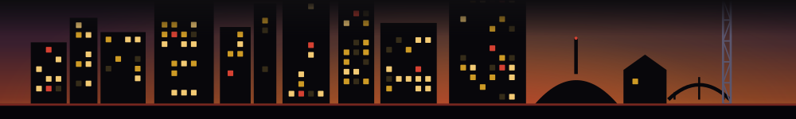

Dove Week 2026 - Night of Worship featuring Elevation Worship
Ryman Auditorium
Elevation Worship at the Ryman during Dove Week - annual Gospel Music Association programming that draws a devoted crowd and fills the room.

Every week the machine watches far more of Nashville than lands in Friday's email. This is a peek at that wider pool: the time-limited windows we are tracking right now, before the week gets narrowed to the picks. Verified entries only -- if we cannot stand behind it, it is not here, and we never guess a close date.
Elevation Worship at the Ryman during Dove Week - annual Gospel Music Association programming that draws a devoted crowd and fills the room.
Gospel Music Association's roots-focused showcase at the Station Inn - Dove Week's underground complement to the arena stuff happening the same night.
A magic-themed pop-up bar taking over Noelle all week - one of the more conceptually weird things on the downtown calendar right now.
VIP sportsbook viewing for TNF at Kentucky Downs' gaming hall-elevated watch-party energy before the promo wraps.
Christian music's biggest awards night takes over Bridgestone - one evening, live performances throughout.
Vince Gill solo at the Ryman is one of Nashville's purest experiences - the man who literally owns the room, one more time.
The singer-songwriter who broke TikTok with 'labour' brings her debut tour to Marathon - expect a sold-out room.
One-night evening soire at East Nashville's Waymore's - the kind of low-key ticket that disappears quietly.
Chef Julio Hernandez throws a genre-spanning anniversary party for year two of Maz - cumbia meets corn and community.
Full film on screen while the Nashville Symphony plays the score live - one night only at the Schermerhorn.
WeHo's neighborhood farmer's market has two Wednesdays left-last runs for local produce this season.
The UK pop act behind 'i like the way you kiss me' lands at Marathon - indie pop with a big-room feel.
Colt Classic presents a roots-leaning showcase - Helms and the Creepers are the kind of act you catch before the buzz gets loud.
Nashville Opera opens its fall season with Puccini's most dramatic opera - limited run, first night listed is Oct 8.
ZZ Top at a riverside amphitheater on a fall night - one of those shows you'll regret skipping.
Two legacy rock acts, one outdoor stage - the kind of double bill that shouldn't work on paper and absolutely does.
A stacked cast of Nashville songwriters and singers salutes Lennon on his birthday - deep cuts guaranteed.
Two Lennon tributes in one night across town - City Winery's version is intimate and typically sells out early.
The Parthenon hosts a late candlelight set pitting Queen against ABBA - a ridiculous premise that somehow works as a night out.
Fleetwood Mac by candlelight inside a full-scale Greek temple replica - the setting does more work than the setlist needs to.
Deana Carter plays her platinum debut front-to-back at the Ryman on its 30th birthday - a proper Nashville homecoming.
Jack White at The Truth is a room-to-artist mismatch in the best possible direction - one of the most unpredictable live performers alive in a small...
Nashville Symphony plays two nights of John Williams - Star Wars, Schindler's List, Indiana Jones, the full catalog.
Billed as 'the fall getaway you didn't know you needed' - a music festival with small-fest intimacy.
This is the watch-list, not the newsletter. Friday's email is the narrowed, curated read -- the week's here-then-gone Nashville windows worth your time, in your inbox before they close. Free.
Get Friday's list, free →This page does not ping you and does not track what you click. It is a pull surface on purpose -- no alerts, no notifications. The way to stop finding out a day too late is the Thursday list.
Everything here is real and every close date is its own stated date, read from the Fleeting. discovery crawl and shown with its source link. Unconfirmed windows are held off the radar entirely, and dates that do not read cleanly are shown as "on watch" rather than guessed. Want the narrowed daily read instead? See the conditions board, look one up on Still On?, or place them on the map.